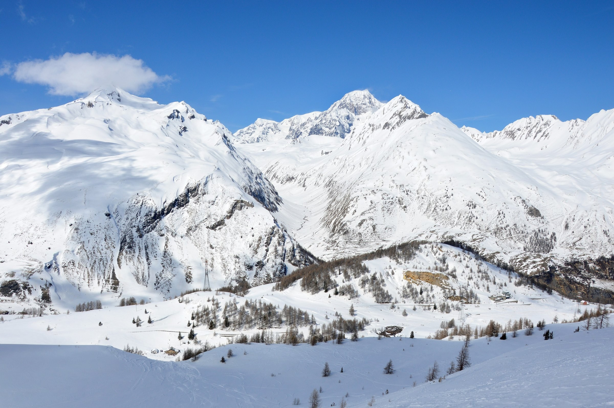
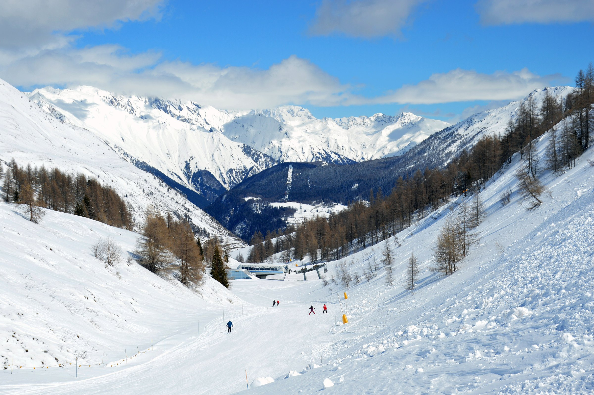
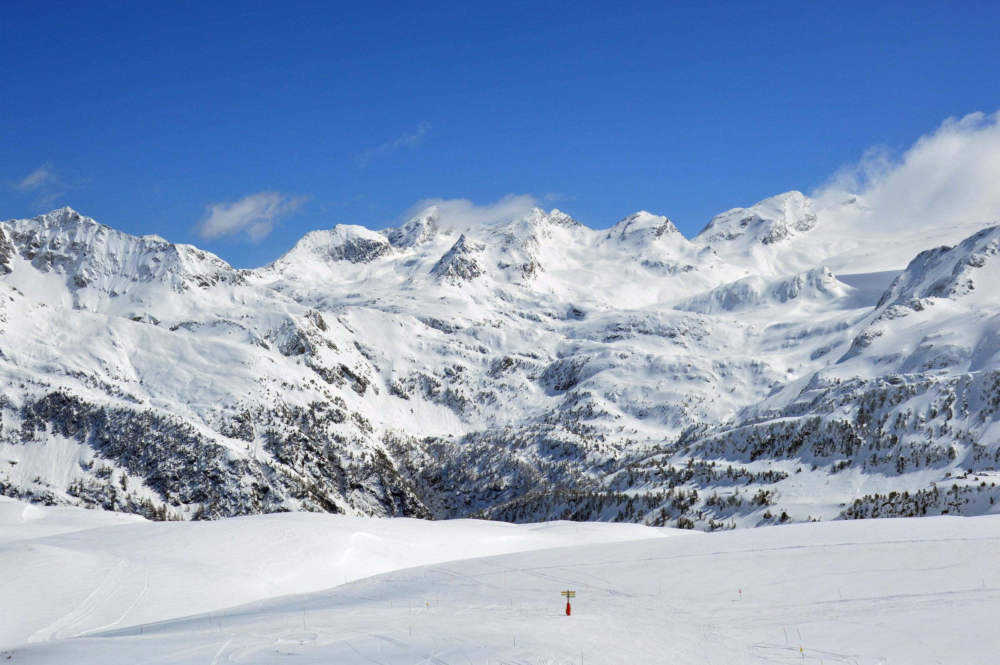

<!doctype html>
<!-- Storie della serata del 25/11 in stile «poster da videogioco» (richiesta del 24/11/2026: «modalità GTA 6»):
     cielo al tramonto rosa e arancio, collage di foto in riquadri col bordo nero, scritte enormi in corsivo
     condensato. Solo l'atmosfera: niente logo, font o scritte del gioco (marchi registrati); il logo è quello
     tondo ufficiale del club. Pagine: #domani (storia del 24/11) e #stasera (storia del 25/11).
     Quando i caratteri e le foto sono pronti il titolo dice «PRONTO [...]» con i problemi trovati. -->
<html lang="it">
<head>
  <meta charset="utf-8">
  <title>Storie GTA</title>
  <link rel="stylesheet" href="../../font/barlow/barlow.css">
  <link rel="stylesheet" href="../../font/barlow-condensed/barlow-condensed.css">
  <style>
    html, body { margin: 0; overflow: hidden; }
    .storia { position: relative; width: 1080px; height: 1920px; overflow: hidden; color: #fff; font-family: Barlow, sans-serif;
      background: linear-gradient(180deg, #1a0638 0%, #4b0f6b 22%, #c2185b 48%, #ff5e62 66%, #ff9a3c 82%, #ffd166 100%); }
    /* Il sole basso dietro al collage, a righe come nei poster anni '80. */
    .sole { position: absolute; left: 190px; top: 760px; width: 700px; height: 700px; border-radius: 50%;
      background: linear-gradient(180deg, #ffe066 0%, #ff9a3c 55%, #ff2e88 100%);
      -webkit-mask: repeating-linear-gradient(180deg, #000 0 34px, transparent 34px 46px); opacity: .55; }

    /* Collage: riquadri inclinati col bordo nero spesso, le foto virate al tramonto. */
    .riquadro { position: absolute; border: 12px solid #0b0b10; background: #0b0b10; overflow: hidden;
      box-shadow: 0 18px 40px rgba(0, 0, 0, .45); }
    .riquadro img { width: 100%; height: 100%; object-fit: cover; display: block; filter: saturate(1.5) contrast(1.15) brightness(.95); }
    /* La virata al tramonto: il bianco della neve diventa rosa e arancio, come nelle copertine del genere. */
    .riquadro::after { content: ""; position: absolute; inset: 0; mix-blend-mode: multiply;
      background: linear-gradient(165deg, #ffb3d1 0%, #ff8fa3 45%, #ffb36b 100%); }
    #r-monte  { left: -20px; top: 330px; width: 680px; height: 470px; transform: rotate(-4deg); }
    #r-gruppo { left: 530px; top: 390px; width: 590px; height: 460px; transform: rotate(5deg); z-index: 2; }
    #r-pista  { left: 40px;  top: 760px; width: 540px; height: 310px; transform: rotate(3deg); z-index: 3; }
    #r-sera   { left: 560px; top: 790px; width: 500px; height: 290px; transform: rotate(-5deg); z-index: 3; }

    /* Il logo ufficiale, intatto, con un alone al neon intorno. */
    #logo { position: absolute; left: 50%; top: 150px; width: 230px; height: 230px; transform: translateX(-50%); z-index: 6;
      border-radius: 50%; box-shadow: 0 0 0 8px #0b0b10, 0 0 30px 10px rgba(255, 46, 136, .85), 0 0 80px 30px rgba(255, 154, 60, .45); }

    /* Le scritte: corsivo condensato pesante, riempite col tramonto e contornate di nero. */
    .testi { position: absolute; left: 60px; right: 60px; top: 1100px; z-index: 7; }
    .riga { display: flex; align-items: flex-end; gap: 30px; white-space: nowrap; }
    .grande { font: 800 190px/0.82 "Barlow Condensed", sans-serif; text-transform: uppercase; letter-spacing: -.01em;
      transform: skewX(-10deg); transform-origin: left bottom;
      background: linear-gradient(180deg, #fff6a8 0%, #ffd166 35%, #ff7a3c 70%, #ff2e88 100%);
      -webkit-background-clip: text; background-clip: text; color: transparent;
      -webkit-text-stroke: 7px #0b0b10; paint-order: stroke fill; filter: drop-shadow(10px 12px 0 #0b0b10); }
    .ora { margin-bottom: 4px; font: 800 110px/1 "Barlow Condensed", sans-serif; text-transform: uppercase; transform: skewX(-10deg);
      color: #fff; -webkit-text-stroke: 5px #0b0b10; paint-order: stroke fill; filter: drop-shadow(7px 8px 0 #0b0b10); }
    .titolo { display: inline-block; margin-top: 26px; padding: 12px 22px 10px; background: #0b0b10; color: #fff;
      font: 800 58px/1.02 "Barlow Condensed", sans-serif; text-transform: uppercase; transform: skewX(-8deg); }
    .titolo b { color: #ffd166; }
    .info { margin-top: 18px; font-size: 40px; font-weight: 700; line-height: 1.2; }
    .info .data { display: inline-block; padding: 8px 18px 6px; background: #ff2e88; color: #fff; font-weight: 800; transform: skewX(-8deg);
      text-shadow: none; box-shadow: 6px 6px 0 #0b0b10; }
    .info .buffet { display: inline-block; margin-left: 12px; padding: 8px 18px 6px; background: #ffd166; color: #0b0b10; font-weight: 800;
      transform: skewX(-8deg); text-shadow: none; box-shadow: 6px 6px 0 #0b0b10; }
    .info .dove { display: inline-flex; gap: 14px; align-items: flex-start; margin-top: 22px; padding: 10px 20px 8px;
      background: #0b0b10; transform: skewX(-8deg); }
    .info .dove svg { flex: 0 0 auto; width: 42px; height: 42px; margin-top: 4px; fill: #ffd166; filter: drop-shadow(0 3px 0 #0b0b10); }
  </style>
</head>
<body>
  <script>
    const PIN = '<svg viewBox="0 0 24 24" aria-hidden="true"><path d="M12 2a7 7 0 0 0-7 7c0 5.2 7 13 7 13s7-7.8 7-13a7 7 0 0 0-7-7zm0 9.5A2.5 2.5 0 1 1 12 6.5a2.5 2.5 0 0 1 0 5z"/></svg>';
    const storia = (quando) => `<div class="storia">
      <div class="sole"></div>
      <div class="riquadro" id="r-monte"></div>
      <div class="riquadro" id="r-gruppo"></div>
      <div class="riquadro" id="r-pista"></div>
      <div class="riquadro" id="r-sera"></div>
      
      <div class="testi">
        <div class="riga"><div class="grande">${quando}</div><div class="ora">alle 21</div></div>
        <div class="titolo">Presentazione della <b>stagione 2026/27</b></div>
        <div class="info">
          <span class="data">Mercoledì 25 novembre · ore 21:00</span>
          <div class="dove">${PIN}<span>Circolo Way Assauto, corso Pietro Chiesa 20, Asti</span></div>
          <div style="margin-top: 18px"><span class="buffet" style="margin-left: 0">Buffet e brindisi finale</span></div>
        </div>
      </div>
    </div>`;
    const PAGINE = { domani: () => storia("Domani"), stasera: () => storia("Stasera") };
    const nome = location.hash.slice(1) || "domani";
    document.body.insertAdjacentHTML("afterbegin", (PAGINE[nome] || (() => "<p>Pagina sconosciuta</p>"))());
    window.addEventListener("load", () => document.fonts.ready.then(() => {
      const problemi = [];
      if (!PAGINE[nome]) problemi.push(`pagina sconosciuta: ${nome}`);
      for (const img of document.images) if (!img.complete || !img.naturalWidth) problemi.push(`immagine mancante: ${img.getAttribute("src")}`);
      // Niente testo fuori dalla storia né nelle fasce coperte da Instagram (in alto e in basso 250 px).
      const box = document.querySelector(".testi").getBoundingClientRect();
      if (box.bottom > 1920 - 230) problemi.push(`testi troppo in basso: ${Math.round(box.bottom)}`);
      // Ogni riga di testo dentro i 960 px della storia (le scritte inclinate sporgono di poco: 20 px di tolleranza).
      for (const el of document.querySelectorAll(".testi *")) {
        const r = el.getBoundingClientRect();
        if (r.width && (r.left < 40 || r.right > 1060)) problemi.push(`testo fuori: ${el.className || el.tagName} ${Math.round(r.left)}–${Math.round(r.right)}`);
      }
      document.title = `PRONTO ${JSON.stringify(problemi)}`;
    }));
  </script>
</body>
</html>
